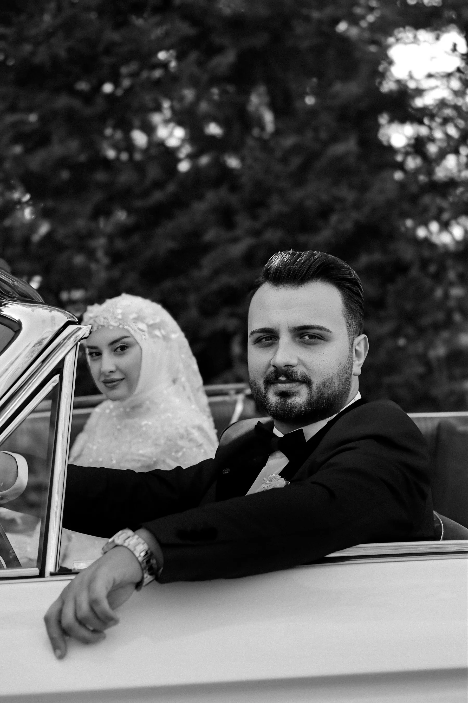
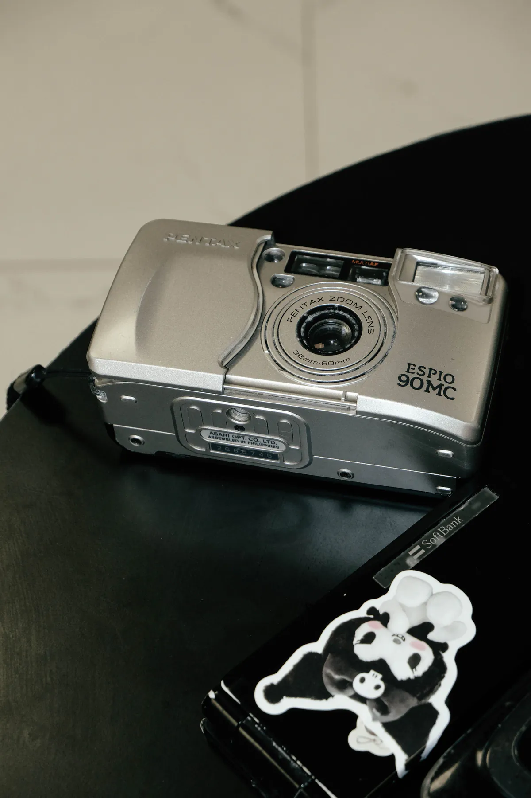
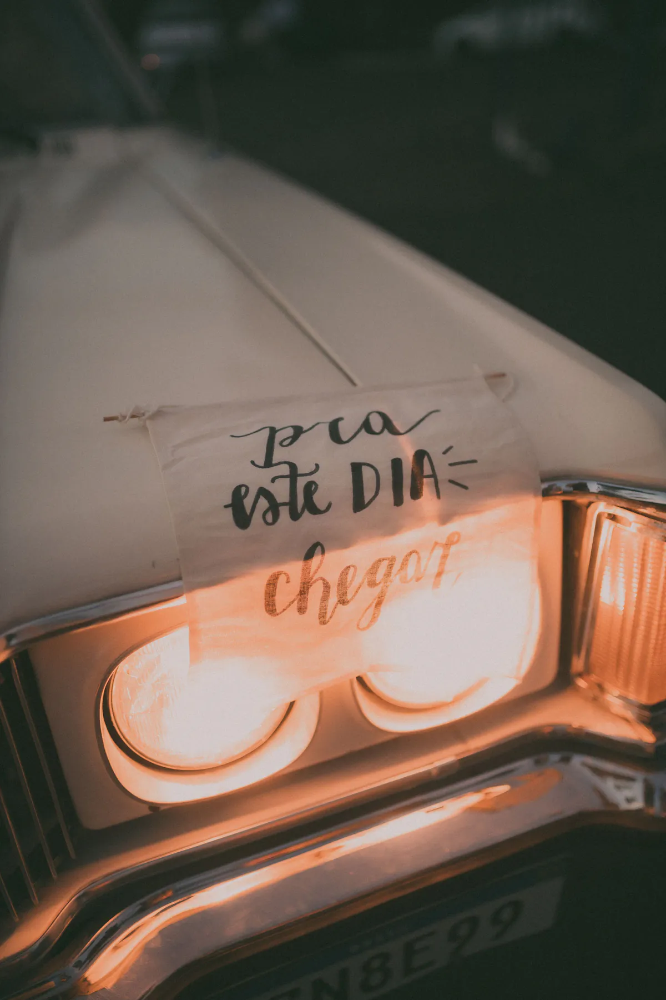
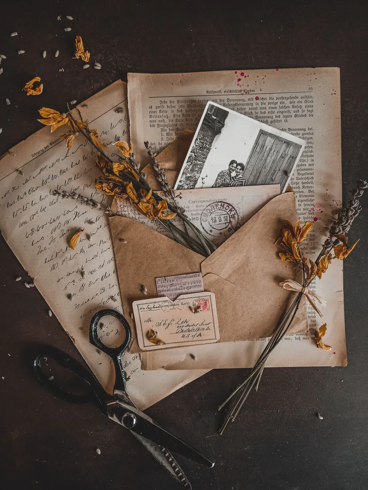

02 · PELÍCULA DE BIENVENIDA
Nuestra historia,
en movimiento.
Un fragmento audiovisual con encuadre inspirado en película de 16 mm, sin depender de multimedia remota.
Proyector preparado.CORRESPONDENCIA · PARRAS
EDICIÓN ESPECIAL · VOL. XVI

ARCHIVO E/N · FRAME 01TITULAR DEL DÍA
Después de nueve años, siete ciudades y miles de fotografías, Emilia y Nicolás anuncian la celebración de su siguiente capítulo.

E + N16MM · REEL 01 · 00:1602 · PELÍCULA DE BIENVENIDA
Un fragmento audiovisual con encuadre inspirado en película de 16 mm, sin depender de multimedia remota.
Proyector preparado.03 · PRÓXIMA EDICIÓN
Hacienda San Lorenzo · edición de otoño
04/A · CEREMONIA
Hacienda San Lorenzo · 16:30
Parras de la Fuente, Coahuila

EST. 189404/B · RECEPCIÓN
Acceso por Patio Norte · 18:00
Segunda entradaHospedaje de época05 · ÁLBUM DE FAMILIA

NEG. 01amor es
recordar juntos
CÓDIGO DE VESTIMENTA
Traje oscuro y vestido largo. Espresso, verde profundo, burgundy y beige cálido; blanco reservado para la novia.
07 · CON AFECTO
Tu compañía formará parte de nuestro álbum. Si deseas añadir un detalle, consulta la opción elegida por los anfitriones.
Abrir registro08 · TAQUILLA PRIVADA
Confirma antes del 16 de agosto.